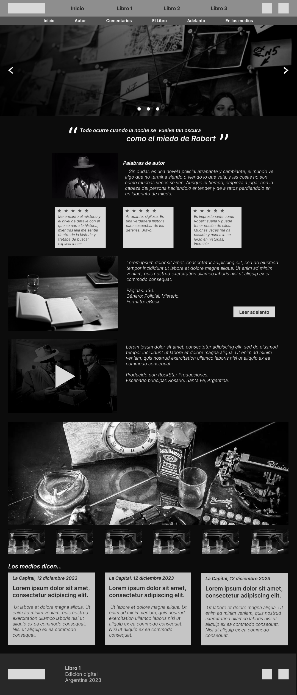

Uno de mis hobbies favoritos y que me ayudan distenderme es el de escribir. Actualmente tengo 3 libros escritos del género Policial / Drama / Misterio, aún no publiqué ninguno de ellos ya que prefiero lanzarlos a la venta en formato físico y online dentro de un tiempo. Mis conocimientos tambien incluyen una cierta rama del marketing y mi experiencia en ventas termina de consolidarse luego de 10 años de emprendimiento, con lo cual decidí comenzar a diseñar por medio de wireframe el sitio a futuro que alojará la venta de los 3 libros. A continuación describro cual es el proceso en el que estoy trabajando y otros detalles.
Wireframe Baja.
Wireframe Media.
